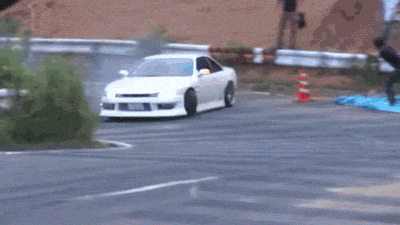

Drifting is a form of driving style in which the driver uses the throttle, handbrake, clutch, gear shifting and steering to keep the car in a state of oversteer while manoeuvring from bend to bend.
Drifters put an emphasise on car control by co-ordinating the amount of oversteer with throttle control and handbrake to shift the weight of the vehicle back and forth through the turns.This is all done while adhering to the standard racing lines (or pre-set clipping points if in a competition) and maintain the most extreme slip angles.
The history of drifting as we know it today goes way back to the 1960s to the winding mountain roads of Japan. Back then a group of racers called the Rolling Zoku raced on the twisty mountain roads of Japan trying to set record times between point A and B.
As the racers improved and their lap times became faster, these racers started going over the grip limit of their tires. They found out that by going over the limit the car was still controllable. In the end it didn't seem to be faster, but it sure was a outrageous and exciting way to show off car control skills. It was then that racers in Japan first studied this driving technique.
Later on in the 1970s there was the All Japan Touring Car Championship. The racers were heavily competing against each other, and each lap the racers increased their lap times bit by bit, testing the tires grip to the limit! This resulted in an awesome spectacle of car control where the racing drivers drifted their cars incredibly fast through the corners.
One of those drivers was a former motorcycle driver, Kunimitsu Takahashi. Takahashi's drifting technique was unmatched by anyone else. He was able to hit the corners apex at high speeds perfectly and caused the car to oversteer.
Combined with the fact that he was driving a car that was build for the win, the Nissan Skyline KPGC10, or Hakosuka, he accounted for more than 50+ straight victories on a row and captured several championship titles along the way. The spectacle of burning rubber made the crowd love Takahashi. It was the adrenaline of high speed,loud engines and the cars pouring smoke from the rear tyres that made motorheads fall in love with this driving technique to evolve it to the sport it is today
It is only in recent years that drifting has really taken off in Ireland. It has been transformed from a hobbie for motor enthusiasts to a fully recognised motorsport.Just like any other sport there is local amature events hosted nationwide most weekends whilst pro competitions run several times a year attracting thousands of spectators and drivers from all over the world.
Throughout this website you will learn about the most popular cars used for drifting,the best Irish Drivers and the tracks and locations where you can go to expierience the intense atomosphere of drifting for yourself.